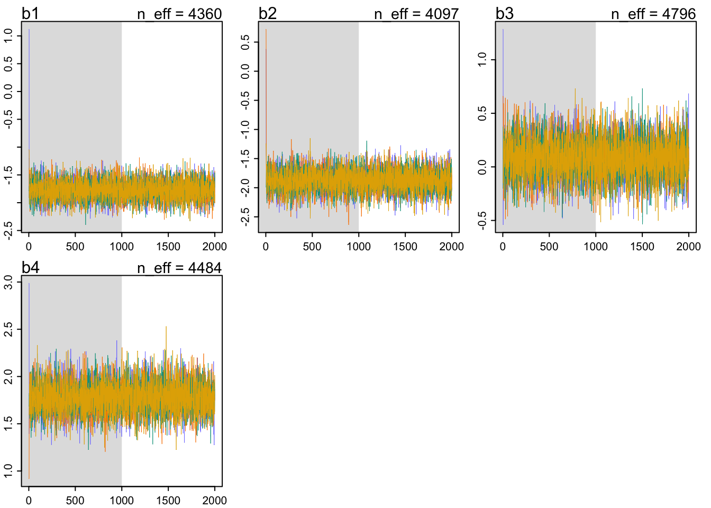

library(dplyr)
library(tidyverse)
library(ggformula)
library(rstan)
library(rethinking)
library(CalvinBayes)
library(tidybayes)
library(bayesplot)Fit It
data <- dat %>% mutate(final_four = ifelse(is.na(final_four), 0, final_four))# Convert Final Four appearance to binary (TRUE if team reached Final Four, FALSE otherwise)
data <- data %>%
mutate(final_four = ifelse(final_four >= 0, TRUE, FALSE))
# check the class balance
table(dat$final_four)
1
16 clean_data <- data %>%
drop_na(seed, AdjOE, AdjDE, AdjEM, AdjTempo)
nrow(clean_data)[1] 272dat <- list(
final_four = as.integer(clean_data$final_four),
AdjOE = scale(clean_data$AdjOE),
AdjDE = scale(clean_data$AdjDE),
AdjEM = scale(clean_data$AdjEM),
AdjTempo = scale(clean_data$AdjTempo),
seed = clean_data$seed
# N = nrow(clean_data),
# N_seeds = max(clean_data$seed, na.rm = TRUE)
)m_mcmc <- ulam(
alist(
final_four ~ dbinom(1, p),
logit(p) <- b1*AdjOE + b2*AdjDE + b3*AdjTempo + b4*seed,
# Priors for main effects
b1 ~ dnorm(logit(.1), .2), #AdjOE
b2 ~ dnorm(logit(.15), .2), #AdjDE
b3 ~ dnorm(0, .2), #tempo
b4 ~ dnorm(-logit(.2), .2) #seed
),
data = dat,
chains = 4,
cores = 4,
iter = 2000
)precis(m_mcmc, depth = 2) mean sd 5.5% 94.5% rhat ess_bulk
b1 -1.77540111 0.1730105 -2.0500837 -1.4966216 1.0022716 4360.299
b2 -1.86841615 0.1896069 -2.1744671 -1.5691252 0.9998553 4097.454
b3 0.07586466 0.1817147 -0.2170343 0.3665999 1.0001905 4796.074
b4 1.78033460 0.1633850 1.5268328 2.0479866 1.0023300 4484.298traceplot_ulam(m_mcmc)
The fit will change into a more standard form than ulam. But the results can still be used as a proof of concept that the parameters chosen produce stable results.